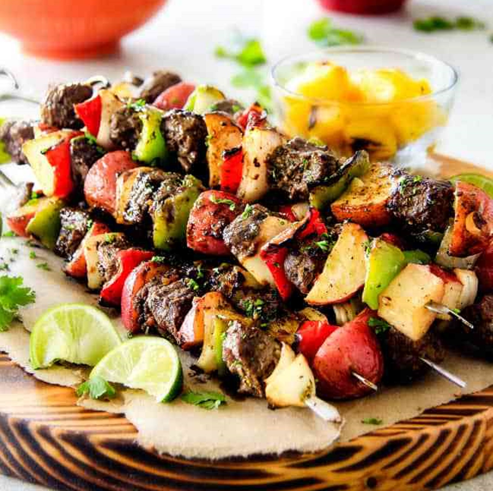
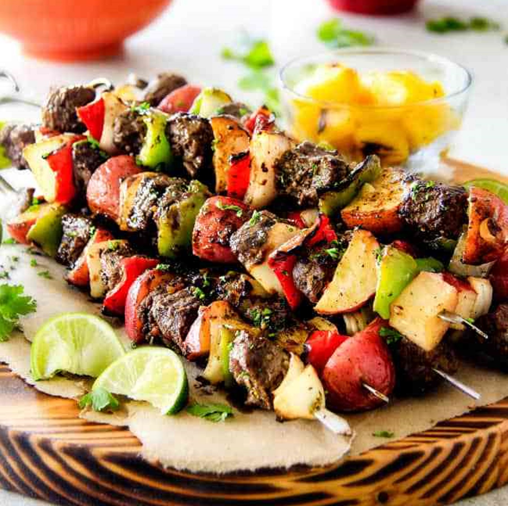
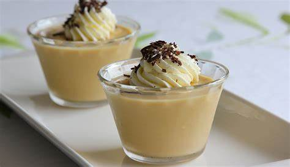
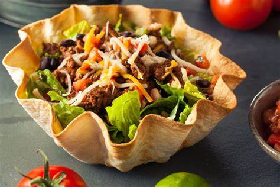
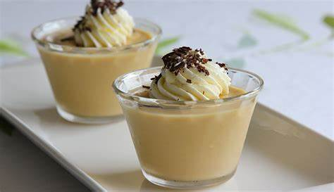
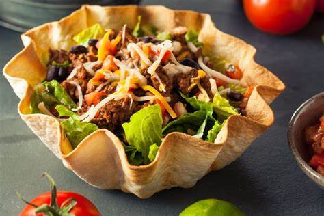

All Season Foods roots go as far back a 14 years, with amazing clients to today. We are still in this ever competitive food business and have upgraded our services for the best of our clients who have supported us all these years. Our business has grown despite having many competitors in the market. We are proud to say that we have created a strong bond with our clients.
In the course of over 14 years, we've become an established caterer. In the coming decades, we'll continue to transform our industry by staying true to our core values.
Formed in 2004
2 million meals served
We live and breath food, its presentation and taste. We treat customers like they are our guests. And because they expect food to be good and wholesome, we maintain the highest quality assurance standards. We constantly review all our operational activities to help our customers save costs and improve our own profitability and sustainability.
Our core values:
"Quality means doing it right even when no one is looking."
All Season Foods offers quality commitment, leadership capability, quality culture and goals in becoming the best.
We are restless in our aim to improve things for the better. We work closely with our suppliers to develop high quality and innovative products that are to our customers' needs and requirements.
We operate rigorous quality management systems on a precautionary principle, supported by a range of on-site audits and product testing.
All Season Foods adheres to a robust catering quality assurance plan to ensure that all hygiene, halal, security and catering operational practices satisfy given requirements.
How do we maintain quality?
 

 


